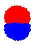

Sites start randomly red or blue. Random walkers alternate in color with reds starting at the
top, blues at the bottom. Walks are constrained not to exit the disc, and stop when they
reach a site of opposite color, changing it to their own color. This model was invented by Jim Propp.
1/2 blue
1/3 blue
1/4 blue
1/6 blue
Aggregation version with two sources. A red particle will stop when it reaches
any non-red site (empty or blue) and turns that site red. The following were formed
from 50000 particles of each color. As the sources get closer together, more particles
get eroded and fewer aggregate.
sources at distance 200
sources at distance 50
distance 10
adjacent sources

Aggregation with twice as many reds released as blues:
40k red, 20k blue
80k red, 40k blue
160k red, 80k blue
320k red, 160k blue
Aggregation with a single source that alternately emits red and blue (to make
things nontrivial, the source site itself has no color; walks just pass over it). These
are five independent samples formed from 50 million particles of each color, nearly all of
which annihilate each other:
(I'd like to check these on a different platform at some point, just to make
sure the patterns are not some bizarre consequence of the random number generator!)